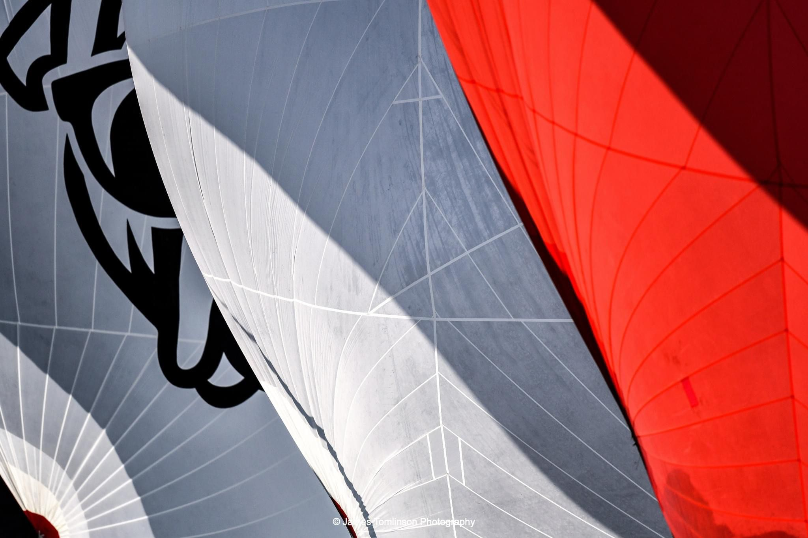
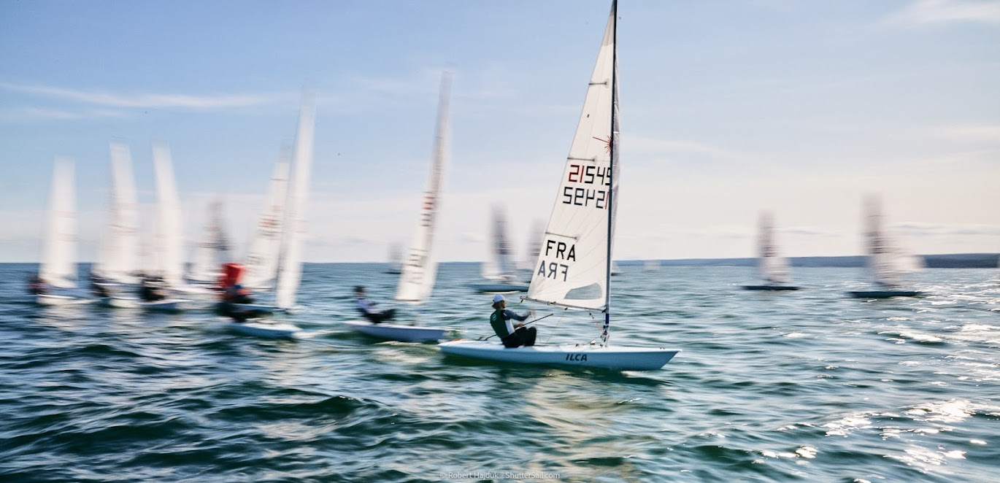
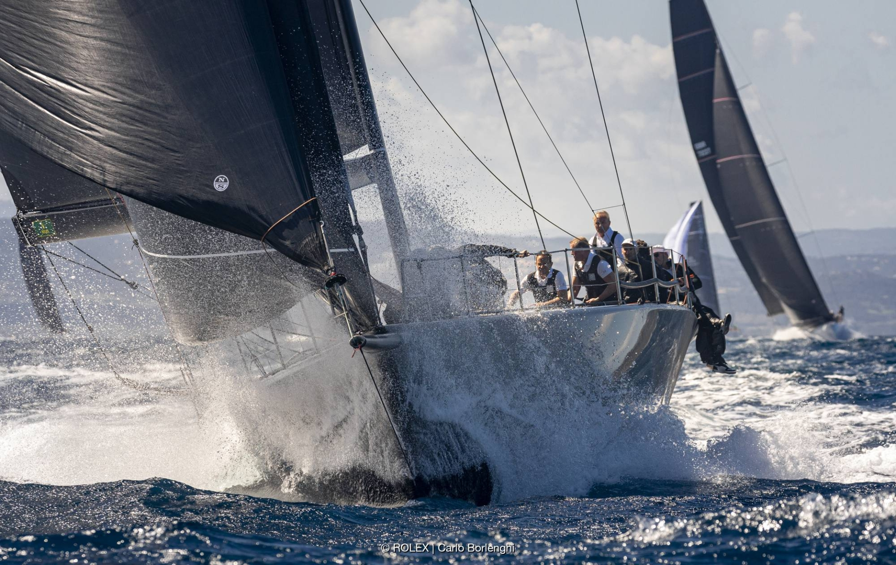
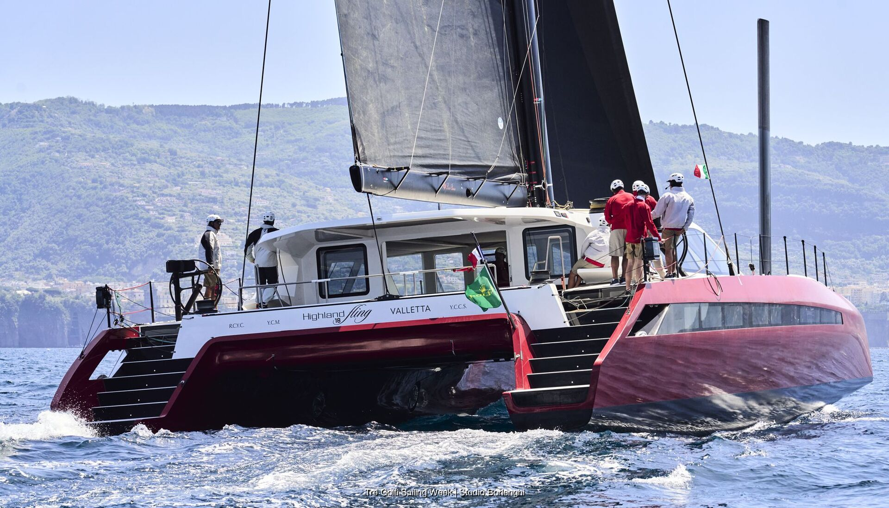
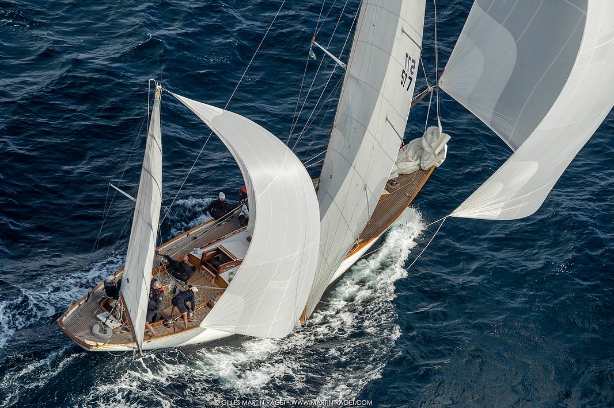
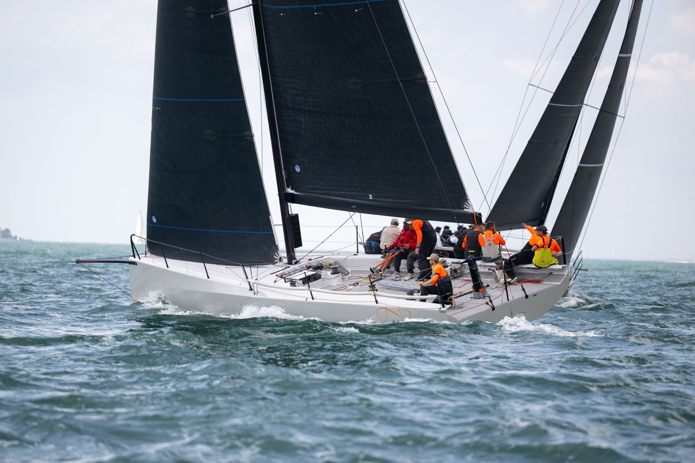
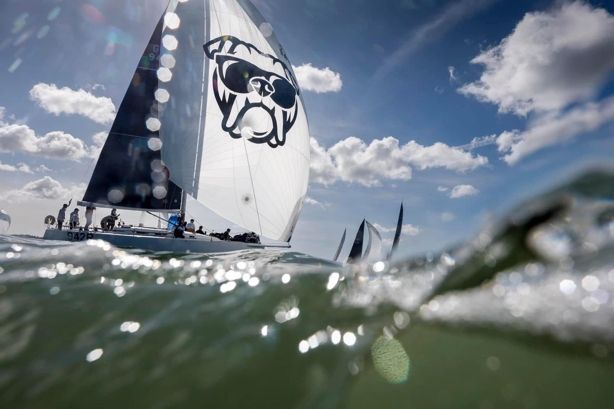
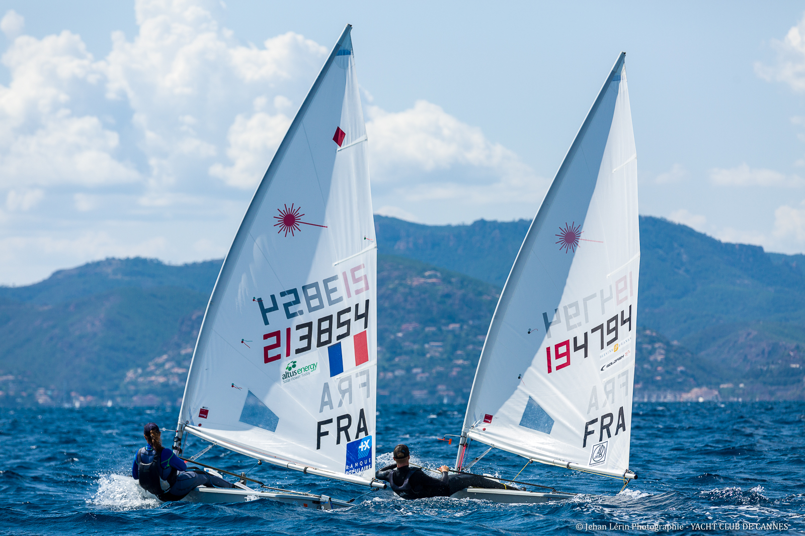

About

Performance-focused navigator and technical sailor working across meteorology, oceanography, and data science.
Background in youth Laser sailing in France through to offshore and big-boat campaigns, supported by an MSci in Oceanography (Southampton) and MSc in Meteorology (Reading).
Core Expertise
- Navigation, weather strategy, offshore routing, and race performance analysis.
- Boundary-layer meteorology, ocean modelling, and practical forecast interpretation.
- Python, SQL, Git, Jupyter, MATLAB, R, GIS, Expedition, Adrena, NMEA, AutoCAAD, GOMBOC.
Qualifications
- MSci Oceanography, University of Southampton.
- MSc Meteorology, University of Reading.
- FaRo processor training, First Aid/Sea Survival, RYA Powerboat 2.
- Bilingual English/French, French and English passport holder.
Racing

From top-level youth Laser competition to big-boat inshore and offshore programs, with a current focus on navigation roles.
Highlights
- French Youth National Laser Champion with gold and silver fleets at Youth World and European championships.
- Admiral’s Cup 2025 (Fast40+ Amplifi), Maxi Europeans 2025 (Highland Fling 18), Maxi Worlds 2024 (Jethou 77).
- Multiple RORC wins on J122 Bulldog, and wins in Med classics seasons on S&S52 Comet.
- U27 for the 2027 Admiral’s Cup!
Racing Context
- Strong local knowledge in the South of France (St Tropez to Monaco) and the Solent. Sailing experience across various classes and spots in the Med.
- Regularly sailed all roles and now focused on navigation, weather routing and performance analysis.
- Proficient in marine electronics and instrumentation to support navigation and performance decisions.







MetWind
At MetWind, I produce race-specific forecasts, strategic briefings, and routing support for high-level sailing teams.
- Clear inshore and offshore forecasting made for sailors to make informed decisions.
- Scenario-based strategy work instead of single-output model thinking.
- Translation of complex model data into practical onboard calls.
- Educational content and lectures for sailing teams.
- Work for all classes from olympic dinghies to ocean crossings including TP52s, RC44, Maxi yachts, J class and IRC.
More: metwind.com
Drift Energy

Drift Energy is developing autonomous sailing vessels that harvest renewable energy at sea and deliver it as green hydrogen.


Concept
- Weather-seeking vessels generate power while sailing and convert it to onboard hydrogen.
- Energy is delivered directly to ports without fixed transmission infrastructure.
- Model designed for scale across offshore industry, shipping, and island energy demand.
My role is in vessel performance and routing: building a bespoke routing algorithm and software specific to energy harvesting vessels. I also support the GOMBOC model and create performance analysis workflows to inform operational and design decisions.
More: drift.energy
Projects
Wind Shear Modelling
MSc work on boundary-layer wind structure and its impact on forecasting and sailing performance.
Oceanography Research
Physical oceanography projects on western Mediterranean deep-water circulation and El Nino/NAO links.
Yacht Racing SAAS Tool
Building a workflow to combine tracks, weather, and performance data for faster post-sailing review.
Routing And Forecast Workflows
Developing practical tools that integrate models, observations, currents, and boat performance under time pressure.
Get in Touch
Open to navigation campaigns, weather and routing support, and technical performance projects. Based between London and Nice.
Useful Links
- New and used yachts: partonyachting.com
- The best bowman harness: crackinthewall.fr/en
- Fenders: defenda.eu